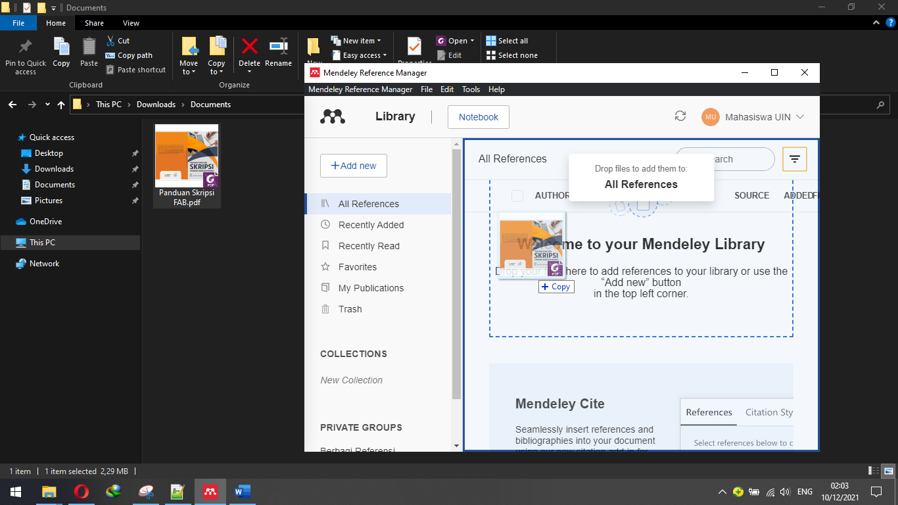
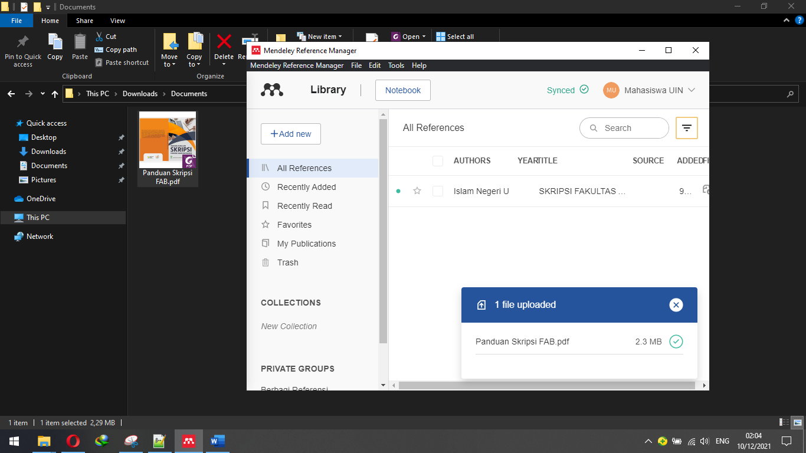
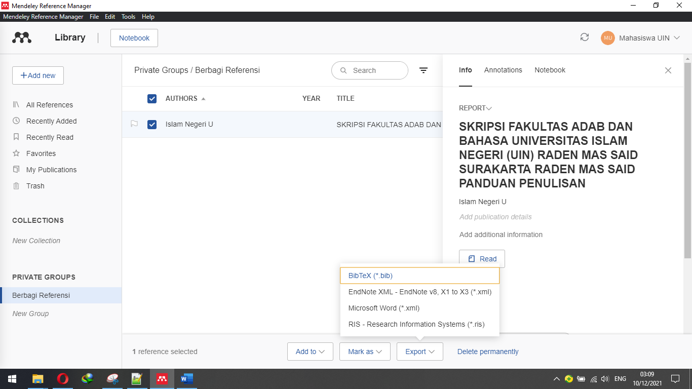
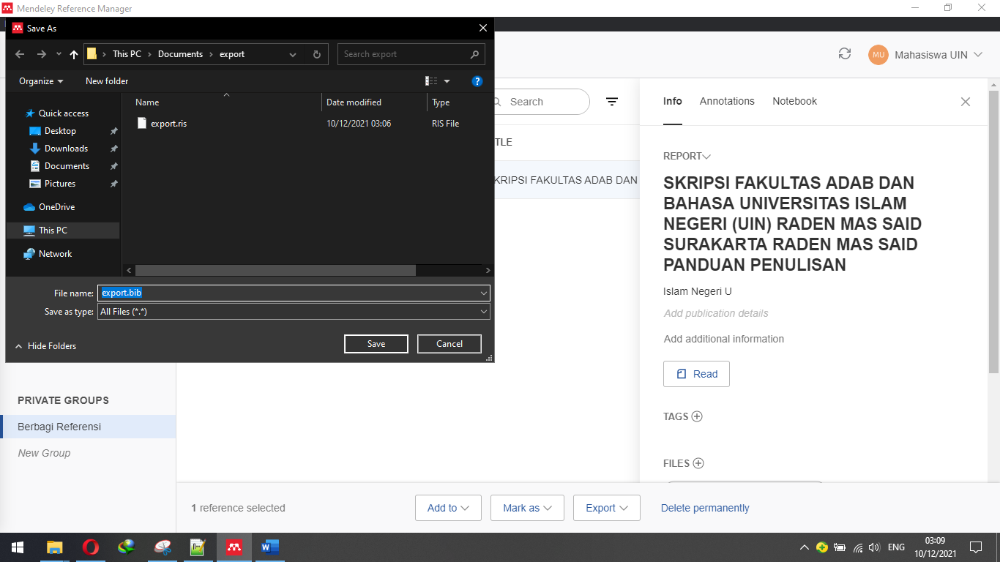
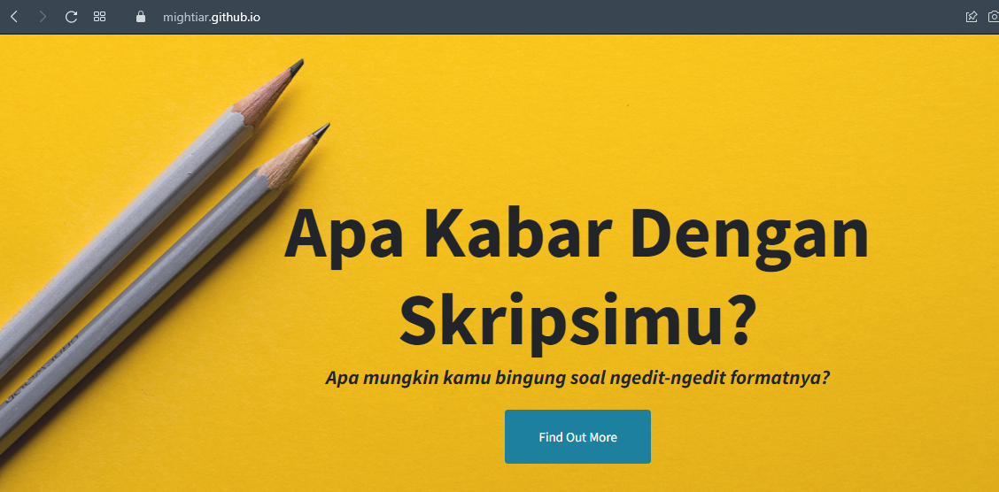
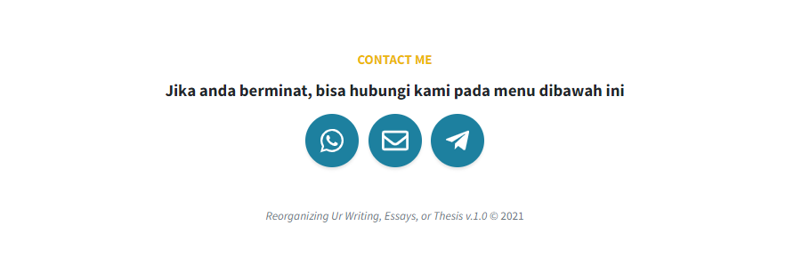

1. Pastikan sudah menginstall aplikasi Mendeley desktop
2. Buka aplikasi mendeley dan cari file yang ingin diimport
3. Select & Tarik file ke jendela Mendeley 
4. Setelah itu file akan diupload ke library Mendeley (jika ingin tersinkron ke library pastikan PC/Laptop tersambung ke internet)
5. Setelah file terupload akan muncul keterangan seperti ini
6. Dan file akan tersimpan dilibrary Mendeley di akun kalian.
1. Buka aplikasi Mendeley
2. Centang file yang ingin diexport

3. Pilih menu export dan tentukan mau diexport ke bentuk file jenis apa
4. Setelah itu simpan dan beri nama file yg diexport
5. Save dan file referensi telah berhasil tersimpan
1. Masuk ke halaman utama web kami disini
2. Scroll ke paling bawah, disana terdapat contact kami yang dapat digunakan untuk mengirimkan file
3. Kalian bisa mengirimkan file referensi melalui salah satu dari menu disana whatsapp, email, atau telegram (disarankan melalui email agar size dari file tidak terkompresi)
4. Setelah itu lampirkan file yang ingin kalian kirimkan dan setelah selesai tekan kirim